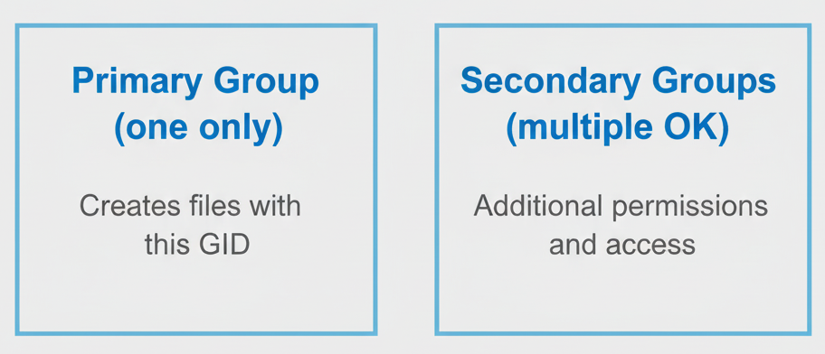
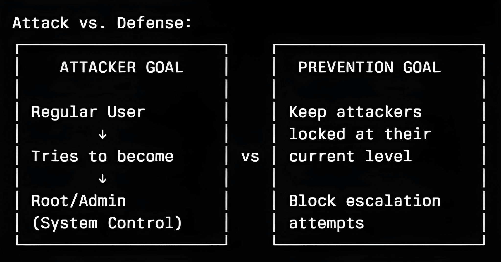
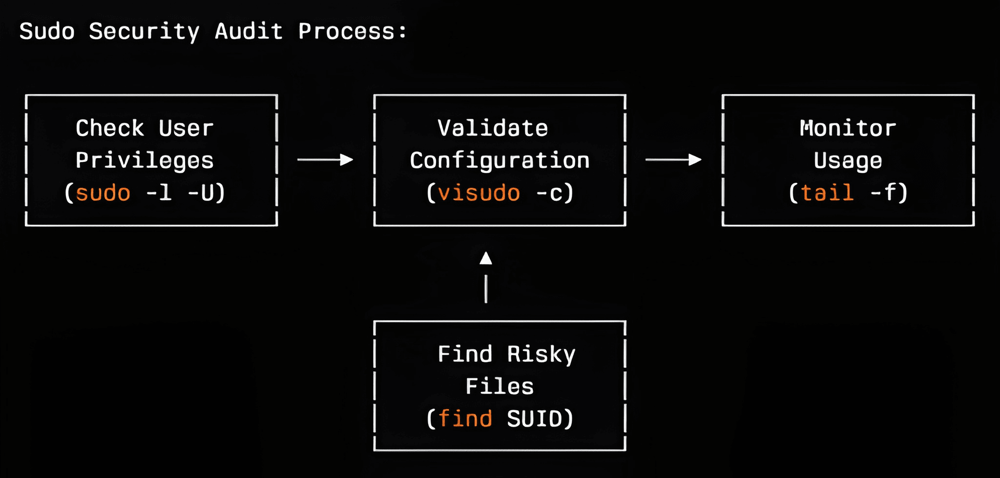
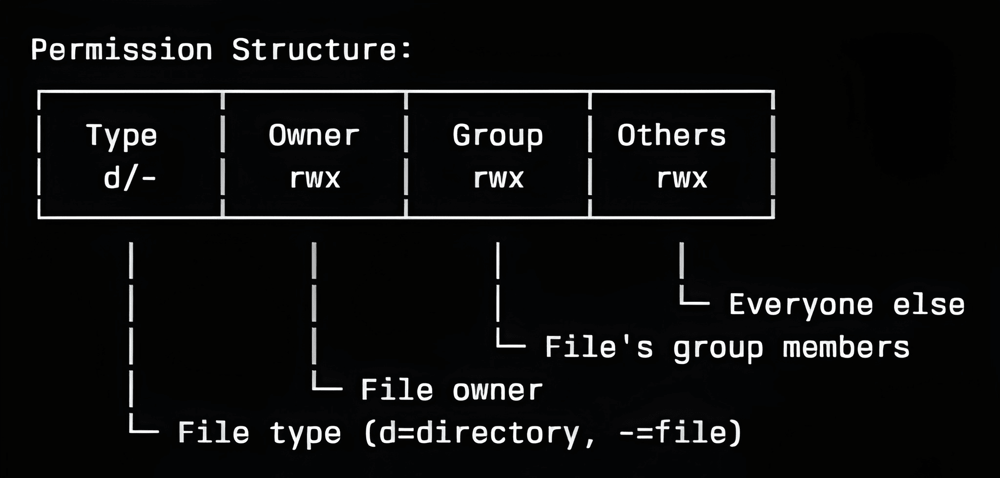
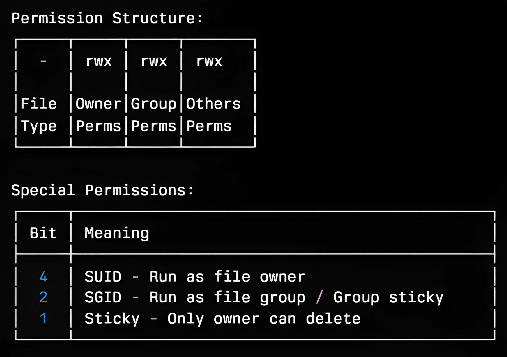
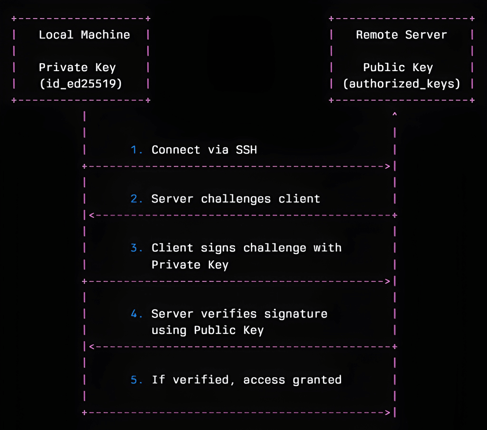

Linux User Management Tutorial: Complete Security Guide
⏱️ Estimated Time: 8-12 hours | 💼 Skill Level: Beginner+ | 🎯 Focus: Security & Penetration Testing
In Module 1, you mastered advanced command-line navigation and file operations, building the foundation to move confidently within the Linux environment. Now, it’s time to take the next big step: understanding users, groups, and security controls.
Linux user management is a fundamental skill for system administrators and security professionals working with Unix-based operating systems. This comprehensive tutorial covers user account creation, group management, password policies, privilege escalation prevention, and SSH authentication hardening—essential topics for securing Linux systems in production environments.
Whether you're a beginner learning system administration or an intermediate user strengthening your security knowledge, this guide provides practical, hands-on examples of Linux user and group management commands. You'll learn to analyze user accounts, implement secure configurations, monitor user activities, and harden SSH access—critical skills for maintaining secure Linux servers.
Learning Objectives
Chapter 1 - User Account Analysis & File Structure
Chapter 2 - User Creation & Management
Chapter 3 - Password Policies & Account Security
Chapter 4 - Group Management & RBAC
Chapter 5 - Privilege Escalation Prevention
Chapter 6 - Advanced Access Control
Chapter 7 - User Activity Monitoring
Chapter 8 - SSH Authentication Hardening
Prerequisites & What You'll Learn
Prerequisites
- Basic Linux command line knowledge (Module 1 completion recommended).
- Understanding of file system basics.
- Terminal access to a Linux system (Ubuntu/CentOS/Kali preferred).
What You'll Learn
✅ Analyze user account structures for security vulnerabilities.
✅ Create and manage users securely with proper configurations.
✅ Implement password policies and account security measures.
✅ Configure group-based access control (RBAC fundamentals).
✅ Prevent privilege escalation through proper sudo configuration.
✅ Set up advanced access controls with ACLs and permissions.
✅ Monitor user activities for forensic analysis.
✅ Harden SSH authentication and disable password logins.
Chapter 1: User Account Analysis & File Structure
User Account Analysis is the process of examining and understanding user accounts in a system—such as who the users are, what permissions they have, and how they access resources.
File Structure refers to the organized way files and folders are arranged and stored on a computer system, showing where data is kept and how different users' files are separated, managed, and protected.
Understanding the Linux Authentication System
Linux stores user account information in three critical files. As a security professional, understanding these files is essential for both defense and penetration testing.
1. /etc/passwd
A plain text file that stores basic information about every user account on the system.
Uses:
- Maps usernames to User IDs (UIDs) and Group IDs (GIDs).
- Lists user home directories and default shells.
- Used for user identification and login shell assignment.
2. /etc/shadow
A more secure text file that stores hashed user password information.
Uses:
- Contains actual password hashes and password aging information.
- Only accessible by the root user and essential security processes, protecting sensitive password hashes from regular users.
- Used by authentication mechanisms (like login, su, sudo) to verify user credentials.
3. /etc/group
A plain text file that defines the system’s group accounts.
Uses:
- Maps group names to Group IDs (GIDs).
- Lists members of each group for access control.
- Allows for management of file and process permissions by group.
| File | Purpose | Security Role |
|---|---|---|
/etc/passwd |
User account info, login shell | Public, readable by all, no password hashes |
/etc/shadow |
Encrypted passwords, expiry | Root-only, keeps password hashes protected |
/etc/group |
Group memberships | Controls group-based permissions and access |
Step 1: Analyzing /etc/passwd Structure
The /etc/passwd file contains basic user information and is
world-readable.
# View the passwd file structure
cat /etc/passwd | head -5
Output

Field Breakdown:
username:password:UID:GID:GECOS:home_directory:shell
│ │ │ │ │ │ │
│ │ │ │ │ │ └─ Login shell
│ │ │ │ │ └─ Home directory path
│ │ │ │ └─ User description/full name
│ │ │ └─ Primary Group ID
│ │ └─ User ID (0 = root)
│ └─ Password placeholder (x = shadowed)
└─ Username
Breakdown:
- username:
root⟶ The account name (superuser) - password:
x⟶ Placeholder (real password is in /etc/shadow) - UID:
0⟶ User ID (0 = root user) - GID:
0⟶ Group ID (0 = root group) - User Info:
root⟶ Full name or description - Home Directory:
/root⟶ Directory for user files - Shell:
/usr/bin/zsh⟶ Default login shell for commands
Summary Table:
| Field | Example Value | Meaning |
|---|---|---|
| username | root | Account name |
| password | x | Placeholder, real password stored in /etc/shadow |
| UID | 0 | User ID Number (Unique identifier) |
| GID | 0 | Group ID Number (Primary group) |
| User Info | root | Description/Real Name (GECOS field) |
| Home Directory | /root | Default folder for user after login |
| Shell | /usr/bin/zsh | Program run on login (command-line interpreter) |
Note:
- System users (daemon/bin/sys) often have login disabled with shells like
/usr/sbin/nologin. - Human users have real shells (like
/bin/bashor/usr/bin/zsh).
🔍 Penetration Testing Tip: Look for users with UID 0 (root privileges) or unusual shell assignments during security assessments.
Step 2: Examining /etc/shadow Security
The /etc/shadow file stores encrypted passwords and account policies.
# View shadow file (requires root/sudo)
sudo cat /etc/shadow | head -3
Output

Shadow Field Structure:
username:password:UID:GID:GECOS:home_directory:shell
│ │ │ │ │ │ │
│ │ │ │ │ │ └─ Login shell
│ │ │ │ │ └─ Home directory path
│ │ │ │ └─ User description/full name
│ │ │ └─ Primary Group ID
│ │ └─ User ID (0 = root)
│ └─ Password placeholder (x = shadowed)
└─ Username
Each line contains password and security details for a Linux user, separated by colons (:)
Field Breakdown:
| Field | Example Value | Meaning |
|---|---|---|
| username | root | Account name |
| password | ! | Encrypted password hash; '!' or '*' indicates account locked or no password set. |
| lastchg | 20348 | Days since Jan 1, 1970 when password was last changed. |
| min | 0 | Minimum number of days required between password changes. |
| max | 99999 | Maximum number of days password is valid (99999 generally means never expires). |
| warn | 7 | Number of days before password expires that user is warned. |
| inactive | (empty) | Number of days after password expires until the account is disabled. |
| expire | (empty) | Date (days since Jan 1, 1970) when the account will be disabled; empty means never. |
| reserved | (empty) | Reserved for future use. |
Security Analysis Commands:
# Check for accounts without passwords (security risk!)
sudo awk -F: '($2 == "" || $2 == "*" || $2 == "!") {print $1 " has no password"}' /etc/shadow
Output

Command Breakdown:
sudo- Required because /etc/shadow is only readable by root.awk -F:- Use colon (:) as field separator to parse shadow file.($2 == "" || $2 == "*" || $2 == "!")- Check password field (field 2) for:""- No password hash set."*"- Account locked/disabled (common for system accounts)."!"- Password locked (user cannot login with password).{print $1 " has no password"}- Print username with descriptive message.
# Find accounts that never expire
sudo awk -F: '($5 == "" || $5 == 99999) {print $1 " password never expires"}' /etc/shadow
Output

Command Breakdown:
$5- References field 5 (maximum password age in days).($5 == "" || $5 == 99999)- Checks for:""- No maximum age set.99999- Effectively infinite (273+ years).- Both conditions mean the password never expires..
# Check for recently created accounts
sudo awk -F: '{if($3 > systime()/86400-30) print $1 " created in last 30 days"}' /etc/shadow
Output

Command Breakdown:
$3- References field 3 (last password change date in days since epoch).systime()- AWK function returning current time in seconds since Unix epoch (1970-01-01).systime()/86400- Converts current time to days since epoch (86400 seconds = 1 day).systime()/86400-30- Calculates date 30 days ago in days since epoch.if($3 > systime()/86400-30)- If account's last password change is more recent than 30 days ago.
⚠️ Security Warning : The shadow file should always have permissions 640 or 600. World-readable shadow files are a critical vulnerability!
Step 3: Group Analysis with /etc/group
# Analyze group structure
cat /etc/group | grep -E "(sudo|wheel|admin)"
Output

Command Breakdown
cat /etc/group: Thecatcommand reads the content of the/etc/groupfile (which lists all user groups on the system) and prints it to the standard output.|: The pipe takes the output fromcat /etc/groupand passes it as input to the next command, grep.grep -E "(sudo|wheel|admin)":grep: Filters the input lines.-E: Enables Extended Regular Expressions."(sudo|wheel|admin)": The pattern searches for any line that contains the stringsudoOR the stringwheelOR the stringadmin.
Group Field Format:
group_name:password:GID:user_list
│ │ │ │
│ │ │ └─ Comma-separated user list
│ │ └─ Group ID
│ └─ Group password (rarely used)
└─ Group namesudo
Chapter 2: User Creation & Management
User Creation & Management in Linux refers to the process of adding, modifying, and removing user accounts on a Linux system. It involves setting up usernames, passwords, permissions, and home directories to control who can access the computer and what they can do. This is essential for securing the system, organizing personal files, and managing user access to resources and applications.
Step 4: Secure User Creation with useradd
Secure user creation means adding a new Linux account in a way that minimizes risk from day one. The useradd command is the low‑level, non‑interactive tool used to create accounts with explicit options, so administrators can set safe defaults (home directory, shell, groups, expiration) and enforce least privilege from the start.
Basic User Creation (NOT Recommended for Production)
# Basic user creation (NOT recommended for production)
sudo useradd testuser
# Set password for testuser
sudo passwd testuser
# This will prompt:
# New password:
# Retype new password:
# Verify password was set
sudo chage -l testuser
Command Breakdown: sudo chage -l testuser
sudo: Execute with administrative privileges (required to read other users' password info).chage: Change age - the password aging utility.-l: List/display current password aging settings.testuser: The target user account to inspect.
Secure User Creation with Complete Setup
# Secure user creation with all options
# Create secure user with:
# -m: create home directory
# -s: set shell to bash
# -G: add to sudo and users groups
# -e: set account expiration
# -c: set user description
# -u: set specific UID
sudo useradd -m -s /bin/bash -G sudo,users -e 2026-08-31 -c "Test User Account" -u 2001 secureuser
# Set password for secureuser (REQUIRED - account unusable without password)
sudo passwd secureuser
# This will prompt:
# New password:
# type new password:
Flag Descriptions Table
| Flag | Long Form | Purpose | Value Example | Security Impact |
|---|---|---|---|---|
-m |
--create-home |
Creates home directory | /home/secureuser |
Provides isolated user workspace |
-s |
--shell |
Sets default login shell | /bin/bash |
Determines command interpreter |
-G |
--groups |
Adds to supplementary groups | sudo,users |
Grants additional permissions |
-e |
--expiredate |
Sets account expiration | 2026-08-31 |
Automatic security cleanup |
-c |
--comment |
Sets GECOS field | "Test User Account" |
Documentation/identification |
-u |
--uid |
Sets specific User ID | 2001 |
Controls numeric user identifier |
# Force password change on first login (SECURITY BEST PRACTICE)
sudo chage -d 0 secureuser
Flag Breakdown:
-d 0 or --lastday 0: Sets last password
change to epoch day 0 (January 1, 1970)
# Set password aging policy (RECOMMENDED)
sudo chage -M 90 -m 7 -W 14 secureuser
# Verify complete user setup
echo "=== USER SETUP VERIFICATION ==="
getent passwd secureuser # Check user account
sudo chage -l secureuser # Check password policy
groups secureuser # Check group memberships
ls -ld /home/secureuser # Check home directory
Flag Breakdown:
M 90or-maxdays 90: Password expires after 90 days.m 7or-mindays 7: Minimum 7 days between password changes.W 14or-warndays 14: Warn user 14 days before expiration.
# Verify user creation
id secureuser
grep secureuser /etc/passwd
Output

Output

Step 5: User Modification with usermod
# Add user to additional groups (append mode)
sudo usermod -aG docker,www-data secureuser
# Change user's shell
sudo usermod --shell /bin/zsh secureuser
# Lock user account (security response)
sudo usermod --lock secureuser
# Unlock user account
sudo usermod --unlock secureuser
# Set account expiration date
sudo usermod --expiredate 2026-12-31 secureuser
# To check if a user account's status
sudo passwd --status secureuser
Output

Output meanings:
L: LockedP: Password set (active)NP: No Password
Flag Description:
-aor--append: Appends user to supplementary groups without removing existing group memberships.-Gor--groups: Specifies supplementary groups to add the user to.--shellor-s: Changes the user's default login shell.--lockor-L: Locks the user account by prefixing the password hash with an exclamation mark (!).--unlockor-U: Unlocks the account by removing the ! prefix from the password hash.--expiredateor-e: Sets the account expiration date.
🔐 Security Best Practice: Always use usermod -aG (append) instead of usermod -G to avoid accidentally removing users from existing groups.
Step 6: Safe User Deletion
# Check what user owns before deletion
sudo find /home -user testuser -ls 2>/dev/null
sudo ps -u testuser
Output

# Safe user deletion (keeps home directory)
sudo userdel testuser
# Complete user removal (removes home directory - DANGEROUS!)
sudo userdel --remove testuser
# Archive user data before deletion (recommended)
sudo tar -czf /backup/testuser_$(date +%Y%m%d).tar.gz /home/testuser
Flag Breakdown
--remove: Complete Wipetar -czf: Secure Archive Backup-c: Create new archive-z: Compress with gzip (reduces storage space)-f: Specify filename$(date +%Y%m%d): Automatic date stamping
Chapter 3: Password Policies & Account Security
Password Policies & Account Security in Linux are rules and settings designed to protect user accounts by ensuring strong passwords and restricting how accounts are used. This includes:
- Password length and complexity requirements (such as minimum number of characters and the use of letters, numbers, and symbols).
- Regular password changes (forcing users to update passwords periodically).
- Account lockout policies (blocking user access after repeated failed login attempts).
- Disabling or removing unused user accounts to prevent unauthorized access.
These policies and settings help keep Linux systems secure by reducing the risk of weak passwords, unauthorized logins, and compromised accounts.
Step 7: Implementing Password Policies
Using chage (Change Age) for Password Aging
chage is a Linux command that manages password expiration policies and
account aging for user accounts. It controls when passwords expire, when users must change them,
and when accounts become inactive.
# View current password policy for user
sudo chage -l secureuser
Output

System-wide Password Policies
# Edit login.defs for system-wide policies
sudo nano /etc/login.defs
# Key settings to modify:
# PASS_MAX_DAYS 90 # Maximum password age
# PASS_MIN_DAYS 7 # Minimum password age
# PASS_WARN_AGE 14 # Warning days
# PASS_MIN_LEN 8 # Minimum password length
What is PAM (Pluggable Authentication Modules)?
PAM stands for Pluggable Authentication Modules - a flexible framework for authentication in Linux and Unix systems.
PAM is like a universal translator for authentication. Instead of each program (like SSH, login, sudo) having its own way to check passwords, PAM provides a standard interface that allows different authentication methods to be "plugged in" without changing the applications.
How PAM Works
Traditional Authentication vs PAM:
text❌ WITHOUT PAM: ssh program → checks /etc/passwd directly login program → checks /etc/passwd directly sudo program → checks /etc/passwd directly (Each program has its own authentication code) ✅ WITH PAM: ssh program → asks PAM → PAM modules check authentication login program → asks PAM → PAM modules check authentication sudo program → asks PAM → PAM modules check authentication (One flexible system for all programs)
Advanced Password Complexity with PAM
# Install password quality checking
sudo apt update && sudo apt install libpam-pwquality
# Edit PAM configuration
sudo nano /etc/pam.d/common-password
# Add/modify this line:
# password requisite pam_pwquality.so retry=3 minlen=12 difok=3 ucredit=-1 lcredit=-1 dcredit=-1 ocredit=-1
PAM Password Options Explained:
| Option | Description | Example |
|---|---|---|
minlen=12 |
Minimum password length | At least 12 characters |
difok=3 |
Different characters from old password | 3 chars must differ |
ucredit=-1 |
Require uppercase letters | At least 1 uppercase |
lcredit=-1 |
Require lowercase letters | At least 1 lowercase |
dcredit=-1 |
Require digits | At least 1 number |
ocredit=-1 |
Require special characters | At least 1 symbol |
Step 8: Account Security Command
# Set user password securely
sudo passwd secureuser
# (System will prompt for password - won't be visible)
# Generate secure random (rand) password
openssl rand -base64 32
# Check password status
sudo passwd -S secureuser
Output

# Lock account password (keeps SSH keys working)
sudo passwd -l secureuser
# Unlock account password
sudo passwd -u secureuser
# Force password expiry immediately
sudo passwd -e secureuser
Flag Breakdown:
-S- Displays the password status information for the given account.-l- Locks the user account password.-u- Unlocks the user account password (removes the lock).-e- Expires the user’s password immediately.
Chapter 4. Group Management & RBAC
Group Management in Linux means organizing users into groups, so you can easily control who can access certain files or resources.
RBAC (Role-Based Access Control) in Linux is a method that lets you assign specific permissions or roles to users or groups, making it simpler to control who can do what on the system.
Step 9: Advanced Group Management
Group Management in Linux means organizing users into collections called "groups" so you can easily control their access to files, directories, and system resources.
Creating Security-Focused Groups
# Application-specific groups (regular groups)
sudo groupadd --gid 3001 webdev # Web development team
sudo groupadd --gid 3002 dbadmin # Database administrators
sudo groupadd --gid 3003 security # Security team
# System service group
sudo groupadd --system --gid 999 appservice # For application services
Visual Summary:
Primary Group (ONE only): ┌─────────────────┐ │ webdev │ ← Main group for new files └─────────────────┘ Secondary Groups (MULTIPLE): ┌─────────┬─────────┬─────────┐ │ dbadmin │ security│ others │ ← Extra permissions └─────────┴─────────┴─────────┘
getent is a Linux command used to fetch entries from important databases like user accounts (passwd), groups (group), hosts (hosts), and more.
# Verify group creation
getent group | grep -E "(webdev|dbadmin|security)"
Output

| Flag | Purpose | When to Use |
|---|---|---|
--gid NUMBER |
Set specific Group ID | When you need consistent IDs across servers |
--system |
Create system group | For applications, services, or system processes |
GID Number Ranges:
A GID (Group ID) in Linux is a unique number used to identify a specific group on the system. Every user and file can belong to a group, and the GID helps the system manage permissions and access for that group.
| Group ID Range | Purpose / Example |
|---|---|
| 0 - 99 | System groups (root, daemon, bin, etc.) |
| 100 - 999 | System/service groups (used by applications and services) |
| 1000+ | Regular user groups (groups created for standard users) |
Understanding Primary vs Secondary Groups
There are two types:
- Primary group: Automatically created for each user; it's their main group.
- Secondary group: Additional groups that a user can be added to for extra access and permissions.

# Check user's groups
id username
groups username
# Change primary group (affects new file creation)
sudo usermod --gid webdev secureuser
# Add to secondary groups (for permissions)
sudo usermod -aG dbadmin,security secureuser
# Remove from secondary group
sudo gpasswd --delete secureuser security
| Command | Purpose | What Changes |
|---|---|---|
usermod --gid |
Change primary group | Default group for new files created by the user |
usermod -aG |
Add secondary groups | Grants additional permissions and access to resources owned by these groups |
gpasswd --delete |
Remove from one group | Removes specific access and permissions granted by that group |
Step 10: Role-Based Access Control Implementation
RBAC (Role-Based Access Control) is a security strategy where users are placed into groups based on their job roles, and then permissions are set at the group level. This means users get access only to what they need for their work, improving security and simplifying permission management.
1. Create Directory Structure
sudo mkdir -p /opt/company/{web,database,security}
What it does: Creates a hierarchical directory structure for different departments.
Flag breakdown:
sudo: Run with administrator privileges (needed to create directories in/opt).mkdir: Make directory command.p: Create parent directories if they don't exist (creates/opt/company/first).{web,database,security}: Bash brace expansion - creates 3 directories at once.
2. Set Group Ownership
sudo chgrp webdev /opt/company/web
sudo chgrp dbadmin /opt/company/database
sudo chgrp security /opt/company/security
What it does: Assigns each directory to its respective team group.
Flag breakdown:
sudo: Administrator privileges required to change ownership.chgrp: Change group ownership command.groupname: Target group (webdev, dbadmin, security).directory_path: Directory to change ownership for.
3. Set Permissions with SGID
In Linux, SGID stands for Set Group ID. It is a special permission flag that can be applied to files and directories to control how the group ownership and execution behave.
sudo chmod 2775 /opt/company/web *# Group sticky bit*
sudo chmod 2770 /opt/company/database *# Group sticky bit, no others*
sudo chmod 2750 /opt/company/security *# Group sticky bit, read-only others*
What it does: Sets permissions with SGID (group inheritance) for team collaboration.
Permission Breakdown:
| Directory | Permission | Numeric Breakdown | Access Level |
|---|---|---|---|
web/ |
2775 | 2 = SGID, 7 = owner (rwx), 7 = group (rwx), 5 = others (r-x) | Open collaboration |
database/ |
2770 | 2 = SGID, 7 = owner (rwx), 7 = group (rwx), 0 = others (---) | Team only |
security/ |
2750 | 2 = SGID, 7 = owner (rwx), 5 = group (r-x), 0 = others (---) | Most restrictive |
Permission Analysis Table:
| Directory | Owner | Group | Others | Security Level |
|---|---|---|---|---|
/opt/company/web |
rwx (full access) | rwx (full access) | r-x (read/browse only) | Open (others can view) |
/opt/company/database |
rwx (full access) | rwx (full access) | --- (no access) | Restricted (team only) |
/opt/company/security |
rwx (full access) | r-x (read/browse only) | --- (no access) | Most secure (owner control) |
4. Verify RBAC Setup
ls -la /opt/company/
What it does: Lists directory details to verify permissions and ownership.
Flag breakdown:
ls: List directory contents.l: Long format (detailed permissions, ownership, size, date).a: Show all files (including hidden ones starting with '.').
Expected Output

SGID (The "2") Explained
SGID (Set Group ID) in Linux is a special file permission that, when set on a file or directory, makes any user who runs the file or creates files in the directory automatically use the group ownership of that file or directory.
The "2" in the permissions (2775, 2770, 2750) sets the SGID bit, which means:
Real-World RBAC Workflow
# Create RBAC structure
sudo mkdir -p /opt/company/{web,database,security}
# Set group ownership
sudo chgrp webdev /opt/company/web
sudo chgrp dbadmin /opt/company/database
sudo chgrp security /opt/company/security
# Set appropriate permissions
sudo chmod 2775 /opt/company/web # Group sticky bit
sudo chmod 2770 /opt/company/database # Group sticky bit, no others
sudo chmod 2750 /opt/company/security # Group sticky bit, read-only others
# Verify RBAC setup
ls -la /opt/company/
Permission Numbers Breakdown:
Understanding the 4-digit Permission Code:
2775 = 2 + 7 + 7 + 5
│ │ │ │
│ │ │ └── Others permissions (5 = r-x)
│ │ └────── Group permissions (7 = rwx)
│ └────────── Owner permissions (7 = rwx)
└────────────── Special bit (2 = Group sticky bit)
Complete Permissions Table:
| Directory | Permission | Owner | Group | Others | Special Bit | Purpose |
|---|---|---|---|---|---|---|
/opt/company/web |
2775 | rwx | rwx | r-x | Group sticky (SGID) | Web team collaboration |
/opt/company/database |
2770 | rwx | rwx | --- | Group sticky (SGID) | Database team only |
/opt/company/security |
2750 | rwx | r-x | --- | Group sticky (SGID) | Security team restricted |
Permission Numbers Reference:
| Number | Binary | Permissions | Meaning |
|---|---|---|---|
| 0 | 000 | --- | No access |
| 1 | 001 | --x | Execute only |
| 2 | 010 | -w- | Write only |
| 3 | 011 | -wx | Write + Execute |
| 4 | 100 | r-- | Read only |
| 5 | 101 | r-x | Read + Execute |
| 6 | 110 | rw- | Read + Write |
| 7 | 111 | rwx | Full access |
Special Bits Explanation:
| Number | Special Bit | Effect | Display |
|---|---|---|---|
| 2 | Group Sticky Bit (SGID) | New files inherit parent group | s in group execute position |
| 4 | SUID | Run as file owner | s in owner execute position |
| 1 | Sticky Bit | Only owner can delete | t in others execute position |
Sticky bit is a special permission in Linux that protects files in shared directories from being deleted or renamed by users who don't own them. It's commonly used on directories like /tmp to prevent users from deleting each other's files.
How Sticky Bit Works
Directory WITHOUT Sticky Bit: ┌─────────────────────────────────────┐ │ /shared_folder/ │ │─────────────────────────────────────│ │ alice_file.txt ← Bob can DELETE! │ │ bob_file.txt ← Alice can DELETE! │ │ temp_data.log ← Anyone can DELETE!│ └─────────────────────────────────────┘ Directory WITH Sticky Bit: ┌─────────────────────────────────────┐ │ /shared_folder/ (sticky bit) │ │─────────────────────────────────────│ │ alice_file.txt ← Only Alice can │ │ bob_file.txt ← Only Bob can │ │ temp_data.log ← Only owner can │ └─────────────────────────────────────┘
What are SUID and SGID?
SUID and SGID are special permissions in Linux that allow files to run with elevated privileges - essentially giving temporary "superpowers" to regular users when they execute specific programs.
SUID (Set User ID)
When you run a program with SUID, it executes with the file owner's privileges instead of your own.
Normal Execution: User Alice runs program → Program runs as Alice SUID Execution: User Alice runs SUID program → Program runs as ROOT (file owner)
Real-World Example: passwd Command
# Check the passwd command*
ls -l /usr/bin/passwd
# Output: -rwsr-xr-x 1 root root 68208 /usr/bin/passwd#
↑
# 's' means SUID is set*
Output

- Regular users need to change their passwords.
- Password data is stored in
/etc/shadow(only root can write). - SUID lets
passwdrun as root temporarily to update the password file.
SGID (Set Group ID)
When you run a program with SGID, it executes with the file's group privileges instead of your group.
SGID on Files:
# Example SGID file
-rwxr-sr-x 1 alice developers 12345 script.sh
# ↑
# 's' means SGID is set
Real-World Example:
| /opt/company/ | ||
|---|---|---|
| web/ | database/ | security/ |
|
• HTML files • CSS files • JS files |
• DB files • Configs • Backups |
• Logs • Audits • Keys |
| Accessible to others | Team Only Access | Restricted Access |
📚 Learn More: The 2 in 2775 sets the setgid bit, ensuring new files inherit the parent directory's group ownership.
Chapter 5: Privilege Escalation Prevention
Privilege Escalation Prevention is a comprehensive set of security practices and techniques designed to stop attackers from gaining higher-level access (like root/administrator privileges) than they should have on a Linux system.

Step 11: Secure Sudo Configuration (20 minutes)
Understanding /etc/sudoers Structure
# Always edit sudoers with visudo (syntax checking)
sudo visudo
# Never edit directly with nano/vim:
# sudo nano /etc/sudoers # DON'T DO THIS!
You should always use visudo because it checks for mistakes before
saving.
- If you edit
/etc/sudoersdirectly withnanoorvimand make even a tiny typo,sudocan stop working, and you could lose admin access. visudoprevents this by validating the file syntax and blocking bad changes, keeping your system safe.
Basic Sudoers Syntax:
# User/Group Host RunAs Commands root ALL= (ALL) ALL %sudo ALL= (ALL) ALL username ALL= (root) /bin/systemctl restart apache2
Creating Secure Sudo Rules
# Create custom sudo rules file
sudo visudo -f /etc/sudoers.d/custom-rules
# Add specific command permissions:
# Allow webdev group to restart web services only
%webdev ALL=(root) NOPASSWD: /bin/systemctl restart apache2, /bin/systemctl restart nginx
# Allow dbadmin to run database commands
%dbadmin ALL=(postgres) NOPASSWD: /usr/bin/psql
# Security team gets limited root access
%security ALL=(ALL) /usr/bin/nmap, /usr/bin/netstat, /bin/ss
# Prevent dangerous commands for regular users
username ALL=(ALL) ALL, !/bin/su, !/usr/bin/passwd root, !/bin/bash, !/bin/sh
Sudo Security Analysis
1. Check Sudo Access for User
sudo -l -U secureuser
What it does: Shows what sudo privileges a specific user has
Flag breakdown:
sudo: Run with administrator privileges.l: List privileges (what commands user can run with sudo).U secureuser: Check privileges for specific user "secureuser".
Expected Output:

2. Test Sudo Configuration Syntax
You need to update the file permissions for /etc/sudoers.d/custom-rules
so
that only the root user
can read and write
(others can only read), ensuring secure sudoers configuration. The recommended permission is
0440
(read for owner and
group, no write or execute).
# Run the following command with sudo to set the correct permissions:
sudo chmod 0440 /etc/sudoers.d/custom-rules
# Now test the sudoers syntax
sudo visudo -c
What it does: Validates the /etc/sudoers file for
syntax
errors
Flag breakdown:
sudo: Administrator privileges required.visudo: Safe editor for sudoers file.c: Check syntax only (doesn't open editor).
Expected Output:

3. Monitor Sudo Usage in Real-Time
sudo tail -f /var/log/auth.log | grep sudo
What it does: Shows live sudo command usage for security monitoring
Flag breakdown:
sudo: Access system log files.tail: Display end of file.f: Follow mode (shows new lines as they appear)./var/log/auth.log: Authentication log file.| grep sudo: Filter only sudo-related entries.
Expected Output:

4. Find SUID/SGID Files (Security Scan)
find / -type f \( -perm -4000 -o -perm -2000 \) -exec ls -la {} \; 2>/dev/null
What it does: Locates files with special permissions that could be exploited for privilege escalation
Flag breakdown:
find: Search command./: Search entire filesystem.type fr: Find files only (not directories).perm -4000: Find SUID files (run as owner).o: OR operator (logical OR).perm -2000: Find SGID files (run as group owner).exec ls -la {} \;: Execute ls -la on each found file.2>/dev/null: Hide error messages .
Expected Output:
.webp)
Why These Commands Matter for Security
Security Monitoring Workflow:

Step 12: SUID/SGID Analysis and Hardening
SUID/SGID Analysis and Hardening is a critical security practice that involves identifying, monitoring, and securing special permission files in Linux systems to prevent privilege escalation attacks.
What is "perm" in Linux?
"Perm" in Linux refers to file permissions - the security settings that control who can read, write, or execute files and directories.
Permissions are like access rules for files and folders. They determine:
- Who can access a file/directory.
- What they can do with it (read, write, execute).
How Permissions Work
Every file and directory has three levels of access:

Permission Types
| Permission | Symbol | Numeric Value | Meaning for Files | Meaning for Directories |
|---|---|---|---|---|
| Read | r | 4 | View file contents | List directory contents (requires execute to enter) |
| Write | w | 2 | Modify/Change file contents | Create or delete files inside the directory |
| Execute | x | 1 | Run file as a program/script | Enter or access the directory (i.e., use `cd` or access files within) |
Real-World Examples
Example 1: View File Permissions
ls -l /etc/passwd
# Output: -rw-r--r-- 1 root root 2847 Sep 2 22:30 /etc/passwd
# ↑ ↑ ↑ ↑
# │ │ │ └─ Others: read only
# │ │ └─ Group: read only
# │ └─ Owner: read + write
# └─ Regular file (not directory)
Example 2: Directory Permissions
ls -ld /home/user
# Output: drwxr-xr-x 2 user user 4096 Sep 2 22:30 /home/user
# ↑ ↑ ↑ ↑
# │ │ │ └─ Others: read + execute (can browse)
# │ │ └─ Group: read + execute
# │ └─ Owner: read + write + execute (full access)
# └─ Directory
# Find all SUID binaries (run as owner)
find / -type f -perm -4000 2>/dev/null | sort
# Find all SGID binaries (run as group owner)
find / -type f -perm -2000 2>/dev/null | sort
Expected Output

Expected Output

# Create a baseline (on a clean system)
find / \( -perm -4000 -o -perm -2000 \\) -type f -exec ls -la {} \\; 2>/dev/null > /tmp/suid_sgid_current.txt
diff /tmp/suid_sgid_baseline.txt /tmp/suid_sgid_current.txt
What it does (in one line): (# Create baseline of SUID/SGID files)
It searches the entire system for files with SUID or SGID permissions, lists their details, and
saves the output to /tmp/suid_sgid_baseline.txt.
Step-by-step Explanation
| Part | Meaning |
|---|---|
find / |
Start searching from the root directory (/), i.e.,
search the whole system. |
\( -perm -4000 -o -perm -2000 \) |
Find files with SUID (4000) or SGID (2000) permissions. -o means OR
between the two conditions. |
-type f |
Only look for files (not directories, links, etc.). |
-exec ls -la {} \; |
For each file found, run ls -la to display detailed
information (owner, group, permissions, etc.). {}
represents each found file. |
2>/dev/null |
Hide error messages, such as “Permission denied” while scanning system directories. |
> /tmp/suid_sgid_baseline.txt |
Save the output to the file /tmp/suid_sgid_baseline.txt instead of printing it on
the screen. |
# Compare against baseline
diff /tmp/suid_sgid_baseline.txt /tmp/suid_sgid_current.txt
Step-by-step Explanation
| Part | Meaning |
|---|---|
diff |
Compares two text files line by line, showing the differences. |
/tmp/suid_sgid_baseline.txt |
The **reference (baseline) file** from a previous scan (represents the known-good state). |
/tmp/suid_sgid_current.txt |
The **current list** generated from the latest scan, which is being compared against the baseline. |
Common SUID Binaries to Monitor
| Binary | Risk Level | Purpose |
|---|---|---|
/bin/su |
High | Switch user (allows elevation to root, depending on permissions) |
/usr/bin/sudo |
High | Execute commands as another user (typically root), controlled by /etc/sudoers |
/usr/bin/passwd |
Medium | Change passwords (requires access to change /etc/shadow, which SUID provides) |
/bin/ping |
Low | Network connectivity check (needs privileged access to raw sockets) |
⚠️ Security Alert: New SUID/SGID binaries could indicate compromise or privilege escalation attempts.
🔍 Chapter 6: Advanced Access Control
Advanced Access Control in Linux means using extra security methods—beyond standard file permissions—to decide which users, groups, or processes can access system files, folders, or resources. Techniques include Access Control Lists (ACLs) and security modules (like SELinux or AppArmor) that allow more detailed and flexible control over who can read, write, or execute files and programs.
Step 13: File Permissions Mastery
Understanding Linux Permissions

# Set comprehensive file permissions
touch /tmp/testfile
chmod 644 /tmp/testfile # rw-r--r--
chmod 755 /tmp/testfile # rwxr-xr-x
chmod 600 /tmp/testfile # rw-------
# Set special permissions
chmod 4755 /tmp/testfile # rwsr-xr-x (SUID)
chmod 2755 /tmp/testfile # rwxr-sr-x (SGID)
chmod 1755 /tmp/testfile # rwxr-xr-t (Sticky)
# Use symbolic notation
chmod u+s /tmp/testfile # Add SUID
chmod g+s /tmp/testfile # Add SGID
chmod +t /tmp/testfile # Add sticky bit
# Security-focused permission analysis
find /home -type f -perm 777 2>/dev/null # World-writable files (dangerous!)
find /etc -type f ! -perm 644 ! -perm 600 ! -perm 755 2>/dev/null # Unusual permissions
Expected Output

Step 14: Access Control Lists (ACLs) Implementation
ACLs provide fine-grained permissions beyond traditional Unix permissions.
# Check if filesystem supports ACLs
mount | grep -E "(acl|ext[234]|xfs)"
# Install ACL tools if needed
sudo apt install acl # Ubuntu/Debian
# sudo yum install acl # CentOS/RHEL
# Create test directory and files
mkdir /tmp/acl_test
cd /tmp/acl_test
touch file1.txt file2.txt
Setting ACL Permissions
# Set ACL for specific user
setfacl -m u:secureuser:rwx file1.txt
# Set ACL for specific group
setfacl -m g:webdev:r-x file1.txt
# Set default ACLs for directory (inherited by new files)
setfacl -d -m u:secureuser:rwx /tmp/acl_test/
setfacl -d -m g:webdev:r-x /tmp/acl_test/
# Set multiple ACL entries at once
setfacl -m u:user1:rw-,u:user2:r--,g:developers:rwx file2.txt
setfacl (Set File Access Control Lists)
-m (modify)
- Modifies or adds ACL entries.
- Does not remove existing ACL entries, only adds/updates specified ones.
-d (default)
- Sets default ACLs for directories.
- These ACLs are inherited by newly created files/subdirectories within that directory.
- Only applies to directories, not regular files
# Verify ACL settings
getfacl file1.txt
ls -la file1.txt # Notice the + symbol indicating ACLs
Expected Output

Expected Output

Advanced ACL Management
# Remove specific ACL entry
setfacl -x u:secureuser file1.txt
# Remove all ACLs (reset to standard permissions)
setfacl -b file1.txt
# Copy ACLs from one file to another
getfacl file1.txt | setfacl --set-file=- file2.txt
# Backup and restore ACLs
getfacl -R /tmp/acl_test/ > /tmp/acl_backup.txt
setfacl --restore=/tmp/acl_backup.txt
Step 15: Umask Configuration
Umask controls default permissions for newly created files and directories.
# Check current umask
umask
umask -S # Symbolic format
# Common umask values:
# 022 = rw-r--r-- (files), rwxr-xr-x (directories) - Default
# 027 = rw-r----- (files), rwxr-x--- (directories) - More secure
# 077 = rw------- (files), rwx------ (directories) - Very secure
Expected Output

# Set umask for current session
umask 027
# Test file creation with new umask
touch testfile_secure
mkdir testdir_secure
ls -la testfile_secure testdir_secure/
Expected Output

Permanent Umask Configuration:
# System-wide umask (affects all users)
sudo nano /etc/profile
# Add: umask 027
# User-specific umask
nano ~/.bashrc
# Add: umask 027
# Verify umask is applied
source ~/.bashrc
umask
🔎 Chapter 7: User Activity Monitoring
User Activity Monitoring in Linux means tracking and recording what users do on a Linux system—such as logins, commands run, and access to files—to improve security, troubleshoot issues, and ensure proper usage.
Step 16: User Activity Analysis Commands
Login Monitoring
# Show currently logged-in users
w
who
users
Expected Output

# Show login history
sudo apt install wtmpdb
last | head -10
Expected Output

# Show specific user's login history
last secureuser
Expected Output

Session Analysis
# Monitor real-time login attempts
sudo tail -f /var/log/auth.log
# Count failed SSH attempts
sudo grep "Failed password" /var/log/auth.log | wc -l
# Find brute force attempts (same IP, multiple failures)
sudo grep "Failed password" /var/log/auth.log | awk '{print $(NF-3)}' | sort | uniq -c | sort -nr
# Check for privilege escalation attempts
sudo grep -i "sudo" /var/log/auth.log | tail -10
Expected Output

Advanced User Monitoring
# Process monitoring by user
ps -u secureuser -o pid,ppid,cmd,etime
Expected Output

# Find processes run by specific user
pgrep -u secureuser -l
Expected Output

# Monitor user file access in real-time (requires auditd)
sudo apt install auditd
sudo auditctl -w /etc/passwd -p rwa -k user_file_access
This command adds an audit rule that tells the Linux Audit subsystem to watch the file /etc/passwd for any read, write, or attribute changes — and tag all
matching audit log entries with the key name user_file_access.
🛡️ It’s used to monitor and log any access or modification attempts to /etc/passwd, which is a critical system file containing user account
information.
Command Breakdown
| Part | Meaning |
|---|---|
sudo |
Run as root (required for audit rules). |
auditctl |
The tool to control audit rules (part of auditd). |
-w /etc/passwd |
“Watch” this specific file path. |
-p rwa |
Specify the permissions to monitor: r (read), w (write), and a (attribute changes like chmod/chown). |
-k user_file_access |
Add a custom tag (key) to the log entries, so you can easily filter events later
with: ausearch -k user_file_access. |
# Searches audit logs for all events tagged with the key "user_file_access"
# Useful for reviewing file access activities recorded by auditd
sudo ausearch -k user_file_access
Expected Output

-a- Show all files including hidden ones (ls).-k- Key/tag for audit rules and searching (auditctl, ausearch).-l- List entries (crontab: list cron jobs; auditctl: list audit rules).-p- Permission types to monitor in audit rules (auditctl):r- Read accessw- Write accessx- Execute accessa- Attribute changes (permissions, ownership, timestamps)-u- Specify username for operations.-w- Watch/monitor a file or directory path (auditctl).
Step 17: Forensic Analysis Techniques
Forensic analysis on Linux is the process of collecting, investigating, and analyzing evidence from a system to understand what happened during suspicious or malicious activity. In an incident response scenario, this step helps administrators quickly review user actions, system changes, and unusual activities with simple, hands-on commands.
These techniques are essential for determining the cause and impact of an incident, collecting evidence (for reporting or legal purposes), and ensuring that threats are remediated.
By following these steps, you get a quick snapshot of system and user activity—making Linux forensic analysis accessible even to beginners.
# Create forensic timeline
sudo aureport --start today --end now --summary
Expected Output

# Analyze command history (if bash_history exists)
sudo find /home -name ".bash_history" -exec wc -l {} +
sudo find /home -name ".bash_history" -exec tail -20 {} +
Expected Output

# Check for suspicious file modifications
sudo find /etc -mtime -1 -type f # Files modified in last day
sudo find /home -name ".*" -type f # Hidden files in home directories
Expected Output

User Network Monitoring and Activity Auditing
# Network connections by user
sudo netstat -tulpn | grep -E "(secureuser|2001)" # Filter by username or UID
# Generate user activity report
cat << 'EOF' > user_audit_report.sh
#!/bin/bash
USER=$1
echo "=== User Activity Report for $USER ==="
echo "Last Logins:"
last $USER | head -5
echo -e "\\nCurrent Processes:"
ps -u $USER -o pid,cmd
echo -e "\\nGroup Memberships:"
groups $USER
echo -e "\\nPassword Status:"
sudo passwd -S $USER 2>/dev/null
EOF
Line-by-Line Explanation
#!/bin/bash- Shebang line.
- Tells the system to run the script using Bash shell.
USER=$1- Assigns the first argument passed to the script to the variable
USER. - Example:
./user_audit_report.sh secureuser→USER=secureuser. echo "=== User Activity Report for $USER ==="- Prints a header for the report.
echo "Last Logins:"- Prints a sub-header for the last login section.
last $USER | head -5last $USER→ Shows the login history for the user.head -5→ Displays only the last 5 login entries.echo -e "\nCurrent Processes:"- Prints a sub-header for current processes.
-eallows interpreting escape sequences like\nfor a newline.ps -u $USER -o pid,cmd- Shows all processes owned by
$USER. -o pid,cmd→ Displays only PID and command name columns.echo -e "\nGroup Memberships:"- Prints a sub-header for groups.
groups $USER- Lists all groups that the user belongs to.
echo -e "\nPassword Status:"- Prints a sub-header for password info.
sudo passwd -S $USER 2>/dev/null- Shows the account/password status for the user.
- Example output:
secureuser P 09/01/2025 0 999 7 -1 (Password set, last change date, etc.) 2>/dev/null→ Silences error messages (e.g., if not running as root).EOF- Appears to be leftover from a here-document (not required in normal scripts).
- Can be removed if the script is standalone.
# Makes the script executable by adding execute permission
chmod +x user_audit_report.sh
Command Breakdown
chmod⟶ change file mode (permissions).+x⟶ add execute permissionuser_audit_report.sh⟶ the script file
# Runs the user audit script for the user 'secureuser'
./user_audit_report.sh secureuser
Command Breakdown
chmod⟶ runs the script from the current directory.+x⟶ the script name.user_audit_report.sh⟶ argument passed to the script (the username to audit)
Chapter 8: SSH Authentication Hardening
SSH Authentication Hardening in Linux means making the SSH (Secure Shell) login process more secure by using strong passwords or keys, disabling risky features, and limiting access—so only trusted users or computers can connect safely to your Linux system.

Step 18: SSH Key Authentication Setup
Generating Secure SSH Keys
# Generate ED25519 key pair (recommended)
ssh-keygen -t ed25519 -C "secureuser@company.com" -f ~/.ssh/id_ed25519
Command Breakdown
| Flag | Purpose |
|---|---|
-t ed25519 |
Specifies the type of key to generate. ed25519 is modern, secure, and recommended. |
-C "secureuser@company.com" |
Adds a comment to the key, usually to identify the user or purpose. |
-f ~/.ssh/id_ed25519 |
Specifies the file path to save the private key. The public key
will be saved as ~/.ssh/id_ed25519.pub. |
# Alternative: RSA with 4096 bits (if ED25519 not supported)
ssh-keygen -t rsa -b 4096 -C "secureuser@company.com" -f ~/.ssh/id_rsa
Command Breakdown
| Flag | Purpose |
|---|---|
-t rsa |
Specifies the key type as RSA. |
-b 4096 |
Sets the key size to 4096 bits (stronger than default 2048). |
-C "secureuser@company.com" |
Adds a comment to identify the key. |
-f ~/.ssh/id_rsa |
Path to save the private key. Public key saved as ~/.ssh/id_rsa.pub. |
# Set proper permissions on SSH directory and files
chmod 700 ~/.ssh
chmod 600 ~/.ssh/id_ed25519
chmod 644 ~/.ssh/id_ed25519.pub
| Feature | ED25519 | RSA |
|---|---|---|
| Algorithm Type | Elliptic Curve (ECC) | Prime Factorization |
| Key Size | 256 bits | 2048–4096 bits (typical) |
| Security | Very strong, modern | Strong if key is large |
| Performance | Fast | Slower, especially with large keys |
| Compatibility | Supported in modern SSH | Supported everywhere |
| Recommended Use | SSH keys, new systems | Legacy support, compatibility |
- ED25519: Modern, fast, secure, and compact ⟶ preferred choice for SSH keys.
- RSA: Older, slower, larger keys ⟶ use if ED25519 isn’t supported or for legacy systems.
Deploying SSH Keys Securely
# Copy public key to remote server (method 1)
ssh-copy-id -i ~/.ssh/id_ed25519.pub secureuser@remote-server
Expected Output

-i ⟶ Identity file
# Manual key deployment (method 2)
cat ~/.ssh/id_ed25519.pub | ssh secureuser@remote-server "mkdir -p ~/.ssh && cat >> ~/.ssh/authorized_keys"
# Set correct permissions on remote server
ssh secureuser@remote-server "chmod 700 ~/.ssh && chmod 600 ~/.ssh/authorized_keys"
# Test SSH key authentication
ssh -i ~/.ssh/id_ed25519 secureuser@remote-server
-p in mkdir -p stands for parents.
Step 19: SSH Server Hardening
Hardening is the process of securing a Linux system by reducing its attack surface. This means:
- Limiting what services are running.
- Controlling access (users, files, network).
- Applying security best practices.
- Making it more resilient against attacks, malware, and unauthorized access.
It’s essential for servers, workstations, or any system exposed to the network.
Secure SSH Configuration
# Backup original SSH config
sudo cp /etc/ssh/sshd_config /etc/ssh/sshd_config.backup
# Edit SSH configuration
sudo nano /etc/ssh/sshd_config
Recommended SSH Security Settings:
# /etc/ssh/sshd_config - Security-focused configuration
# Disable root login
PermitRootLogin no
# Disable password authentication (keys only)
PasswordAuthentication no
PermitEmptyPasswords no
ChallengeResponseAuthentication no
# Enable public key authentication
PubkeyAuthentication yes
# Limit user access
AllowUsers secureuser developer
AllowGroups ssh-users
# Change default port (security through obscurity)
Port 2222
# Disable unused authentication methods
KerberosAuthentication no
GSSAPIAuthentication no
# Enable strict mode
StrictModes yes
# Limit connection attempts
MaxAuthTries 3
MaxSessions 2
# Set idle timeout
ClientAliveInterval 300
ClientAliveCountMax 2
# Disable X11 forwarding if not needed
X11Forwarding no
# Use only strong ciphers and algorithms
KexAlgorithms curve25519-sha256@libssh.org,diffie-hellman-group16-sha512
Ciphers chacha20-poly1305@openssh.com,aes256-gcm@openssh.com,aes128-gcm@openssh.com,aes256-ctr,aes192-ctr,aes128-ctr
MACs hmac-sha2-256-etm@openssh.com,hmac-sha2-512-etm@openssh.com,hmac-sha2-256,hmac-sha2-512
# Enable logging
SyslogFacility AUTH
LogLevel VERBOSE
Validating SSH Configuration
# Test SSH configuration syntax
sudo sshd -t
# Test SSH configuration with verbose output
sudo sshd -T
# Restart SSH service
sudo systemctl restart sshd
# Verify SSH service status
sudo systemctl status sshd
# Test connection with new settings (from another terminal!)
ssh -p 2222 secureuser@localhost
⚠️ Critical Warning: Always test SSH changes from a second terminal session before logging out. If SSH is misconfigured, you could lock yourself out!
SSH Security Monitoring
# Monitor SSH connections in real-time
sudo tail -f /var/log/auth.log | grep sshd
Expected Output

# Create SSH monitoring script
cat << 'EOF' > ssh_monitor.sh
#!/bin/bash
# Monitor SSH security events
echo "=== SSH Security Monitor ==="
echo "Failed SSH logins in last hour:"
sudo grep "Failed password" /var/log/auth.log | grep "$(date +'%b %d %H')" | wc -l
echo -e "\\nSuccessful SSH logins today:"
sudo grep "Accepted" /var/log/auth.log | grep "$(date +'%b %d')" | wc -l
echo -e "\\nTop 5 IP addresses with failed attempts:"
sudo grep "Failed password" /var/log/auth.log | awk '{print $(NF-3)}' | sort | uniq -c | sort -nr | head -5
echo -e "\\nCurrent SSH connections:"
ss -t state established '( dport = :ssh or sport = :ssh )'
EOF
Line-by-Line Explanation
#!/bin/bash⟶ Use Bash shell to execute the script.# Monitor SSH security events⟶ Comment describing the script purpose.echo "=== SSH Security Monitor ==="⟶ Prints script header/title.echo "Failed SSH logins in last hour:"⟶ Section header for failed logins.sudo grep "Failed password" /var/log/auth.log | grep "$(date +'%b %d %H')" | wc -l⟶ Count failed SSH logins in the last hour.echo -e "\nSuccessful SSH logins today:"⟶ Section header for successful logins.sudo grep "Accepted" /var/log/auth.log | grep "$(date +'%b %d')" | wc -l⟶ Count successful SSH logins today.echo -e "\nTop 5 IP addresses with failed attempts:"⟶ Section header for top IPs.sudo grep "Failed password" /var/log/auth.log | awk '{print $(NF-3)}' | sort | uniq -c | sort -nr | head -5⟶ List top 5 IPs causing failed login attempts.echo -e "\nCurrent SSH connections:"⟶ Section header for active connections.ss -t state established '( dport = :ssh or sport = :ssh )'⟶ Show all currently established SSH connections.EOF⟶ Marks end of a here-document if used withcat << 'EOF'.
chmod +x ssh_monitor.sh
./ssh_monitor.sh
Expected Output

Hands-On Lab Scenarios
Lab 1: Corporate Security Assessment
Scenario: You're a security consultant auditing a company's Linux server. Investigate user account security and provide recommendations.
# Step 1: Create test environment
sudo useradd --create-home --shell /bin/bash alice
sudo useradd --create-home --shell /bin/bash bob
sudo useradd --create-home --shell /bin/bash charlie
# Step 2: Simulate security issues
sudo passwd alice # Set weak password: "password123"
sudo usermod --groups sudo alice
sudo chmod 777 /home/alice # World-writable home directory
echo "alice ALL=(ALL) NOPASSWD:ALL" | sudo tee /etc/sudoers.d/alice
# Your Tasks:
# 1. Identify all security vulnerabilities
# 2. Fix permission issues
# 3. Implement proper password policies
# 4. Configure secure sudo access
# 5. Set up proper group memberships
# 6. Generate security assessment report
Solution
-
Identify Security Vulnerabilities
-
Fix Permission Issues
chmod 755⟶ user can read/write/execute; group and others can read/execute only.- Removing NOPASSWD entry ⟶ restores sudo password requirement.
-
Implement Password Policies
chmod 755⟶ controls password aging.passwd -e⟶ forces password change at next login.-
Configure Secure Sudo Access
- This gives passwordless sudo, which is insecure.
- Any user with this entry can execute any command as root without authentication.
-
Configure Proper Group Memberships
-
Generate Security Assessment Report
Document findings and fixes in a report:
Check for common misconfigurations:
# List users with sudo privileges
getent group sudo
# Check home directory permissions
ls -ld /home/alice
# Check sudoers files
sudo cat /etc/sudoers.d/alice
# Check password expiration settings
sudo chage -l alice
Correct directory permissions and insecure sudo:
# Set secure permissions for home directory
sudo chmod 755 /home/alice
# Remove insecure sudo file
sudo rm /etc/sudoers.d/alice
Explanation:
Set corporate-standard password policies:
# Set password expiration: max 90 days, min 7 days, warning 14 days
sudo chage --maxdays 90 --mindays 7 --warndays 14 alice
# Force users to change weak passwords
sudo passwd -e alice
Problem in the lab:
echo "alice ALL=(ALL) NOPASSWD:ALL" | sudo tee /etc/sudoers.d/alice
Ensure users only have necessary privileges:
# Verify alice is removed from sudo group
groups alice
# Optionally, assign to correct groups
sudo usermod -G webdev alice
cat << 'EOF' > security_assessment_report.txt
Corporate Linux Security Assessment
===================================
Users Audited:
- alice
- bob
- charlie
Vulnerabilities Found:
1. Weak password for alice
2. Unnecessary sudo privileges
3. World-writable home directory
4. Passwordless sudo
Fixes Applied:
1. Set strong password for alice
2. Removed alice from sudo group
3. Secured home directory permissions (chmod 755)
4. Removed insecure sudo entry
Password Policies:
- Max days: 90
- Min days: 7
- Warning: 14
Recommendations:
- Regularly audit sudo privileges
- Enforce strong password policies
- Monitor failed login attempts
- Review home directory permissions periodically
EOF
# View report
cat security_assessment_report.txt
Optional Audit Commands
Check ongoing security events:
# Failed SSH logins
sudo grep "Failed password" /var/log/auth.log | wc -l
# Successful SSH logins today
sudo grep "Accepted" /var/log/auth.log | grep "$(date +'%b %d')" | wc -l
Lab 2: Privilege Escalation Prevention
Scenario: Configure a web server environment with proper role separation and minimal privileges.
# Create role-based users
sudo groupadd webdevs
sudo groupadd webadmins
sudo useradd --create-home --groups webdevs developer1
sudo useradd --create-home --groups webadmins webmaster
# Your Tasks:
# 1. Create secure directory structure for web applications
# 2. Set up proper ACLs for file sharing
# 3. Configure sudo rules for service management
# 4. Implement umask settings
# 5. Test privilege separation
# Directory structure to create:
# /var/www/development (webdevs: rwx, webadmins: rx)
# /var/www/production (webadmins: rwx, webdevs: r)
# /var/log/webapp (both groups: rw)
Solution
-
Create Secure Directory Structure for Web Applications
-
Set Up Proper ACLs for File Sharing
-
Configure Sudo Rules for Service Management
-
Implement Umask Settings
Set restrictive
umaskdefaults: -
Test Privilege Separation
# Create directories
sudo mkdir -p /var/www/development
sudo mkdir -p /var/www/production
sudo mkdir -p /var/log/webapp
# Set group ownership
sudo chown :webdevs /var/www/development
sudo chown :webadmins /var/www/production
sudo chown :webdevs /var/log/webapp
sudo chown :webadmins /var/log/webapp
# Enable ACLs if needed
sudo apt install acl
# /var/www/development: webdevs rwx, webadmins rx
sudo setfacl -m g:webdevs:rwx /var/www/development
sudo setfacl -m g:webadmins:rx /var/www/development
# /var/www/production: webadmins rwx, webdevs r
sudo setfacl -m g:webadmins:rwx /var/www/production
sudo setfacl -m g:webdevs:r /var/www/production
# /var/log/webapp: both groups rw
sudo setfacl -m g:webdevs:rw /var/log/webapp
sudo setfacl -m g:webadmins:rw /var/log/webapp
sudo visudo
# Add this at the end for limited web service management:
# Allow only webadmins group to restart web services
%webadmins ALL=NOPASSWD: /bin/systemctl restart nginx, /bin/systemctl restart apache2
# Deny webdevs any sudo by default (no entry, or explicitly)
# For webdevs
echo "umask 027" | sudo tee -a /home/developer1/.bashrc
# For webadmins
echo "umask 027" | sudo tee -a /home/webmaster/.bashrc
# (027 ensures new files are only readable/writable by owner/group, not others)
5.1 Switch to each user and verify access:
# As developer1
sudo su - developer1
touch /var/www/development/devfile
ls -l /var/www/development
touch /var/www/production/devfile # Should fail or be readonly
# As webmaster
sudo su - webmaster
touch /var/www/production/adminfile
ls -l /var/www/production
touch /var/www/development/adminfile # Should be able to read, not write
5.2 Confirm ACLs:
getfacl /var/www/development /var/www/production /var/log/webapp
5.3 Confirm sudo access:
sudo -l # As developer1: no web service management
sudo -l # As webmaster: should list allowed systemctl commands
Lab 3: Incident Response Simulation
Scenario: Suspicious activity detected. Investigate user activities and secure the system.
# Simulate compromise scenario
# Create a Hidden User Account
sudo useradd --shell /bin/bash suspicious_user
# Grant the User Administrator Privileges
sudo usermod --groups sudo suspicious_user
# Install a Scheduled Backdoor
echo "*/5 * * * * /tmp/backdoor.sh" | sudo crontab -u suspicious_user -
# Your Investigation Tasks:
# 1. Identify all recently created accounts
# 2. Find accounts with sudo access
# 3. Check for suspicious cron jobs
# 4. Analyze login patterns
# 5. Secure the system and remove threats
# 6. Document findings
# Investigation commands to use:
# awk -F: '$3 >= 1000 {print $1}' /etc/passwd | xargs -I {} chage -l {}
# grep sudo /etc/group
# sudo crontab -u suspicious_user -l
# last | head -20
Solution
-
Identify All Recently Created Accounts
Check
/etc/passwdentries for users with high UIDs (likely non-system accounts) and review account aging details: -
Find Accounts with Sudo Access
# Check the sudo (admin) group grep sudo /etc/groupThis lists all users with sudo privileges. Confirm if
suspicious_userappears here. -
Check for Suspicious Cron Jobs
-
Analyze Login Patterns
-
Secure the System and Remove Threats
A. Remove Malicious User
sudo deluser suspicious_user sudo rm -rf /home/suspicious_userB. Remove Malicious Cron Job & Script
sudo crontab -u suspicious_user -r sudo rm -f /tmp/backdoor.shC. Audit Sudoers and Lock Down Further
- Check
/etc/sudoersand/etc/sudoers.d/*for suspicious entries. - Reset passwords for privileged users if compromise is suspected.
- Review SSH authorized keys:
basgrep -r "" /home/*/.ssh/authorized_keysD. Reload security and auditing tools
sudo systemctl restart sshd sudo ufw status # Ensure firewall is active - Check
-
Document Findings
awk -F: '$3 >= 1000 {print $1}' /etc/passwd | xargs -I {} chage -l {}
Look for recent creation dates and the username suspicious_user.
# List cron entries for the compromised user
sudo crontab -u suspicious_user -l
Look for scheduled tasks like /tmp/backdoor.sh running every 5
minutes—a strong indicator of malicious persistence.
# Scan all users’ crontabs for other anomalies
for u in $(awk -F: '{if ($3>=1000) print $1}' /etc/passwd); do sudo crontab -u $u -l 2>/dev/null; done
# Check recent logins for anomalies or logins by unknown users
last | head -20
Look for logins by suspicious_user or other unexpected
times/IPs.
# Create a plain-text incident report
cat < incident_report.txt
INCIDENT: Unauthorized user and cron job detected
- Detected new user: suspicious_user
- Detected sudo privileges for suspicious_user
- Malicious cron job: '*/5 * * * * /tmp/backdoor.sh'
- No unusual logins detected in last 20 entries
- Removed user, crontab, and backdoor script
- Restored system state and verified no residual risk remains
EOF
Quick Reference Cheat Sheet
User Management
| Command | Purpose | Example |
|---|---|---|
useradd -m username |
Create user with home | useradd -m alice |
usermod -aG group user |
Add to group | usermod -aG sudo alice |
userdel -r username |
Delete user+home | userdel -r alice |
chage -l username |
View password aging | chage -l alice |
passwd username |
Set password | passwd alice |
Group Management
| Command | Purpose | Example |
|---|---|---|
groupadd groupname |
Create group | groupadd developers |
gpasswd -a user group |
Add user to group | gpasswd -a alice sudo |
groups username |
Show user's groups | groups alice |
id username |
Detailed user info | id alice |
Permission & ACLs
| Command | Purpose | Example |
|---|---|---|
setfacl -m u:user:rwx file |
Set user ACL | setfacl -m u:alice:rw file.txt |
getfacl file |
View ACLs | getfacl /srv/project/ |
chmod 755 file |
Set permissions | chmod 755 script.sh |
chown user:group file |
Change ownership | chown alice:dev file.txt |
Monitoring Commands
| Command | Purpose | Example |
|---|---|---|
last |
View login history | last alice |
lastb |
Failed login attempts | lastb |
who |
Currently logged in | who |
w |
Detailed user activity | w |
ps aux | grep user |
User processes | ps aux | grep alice |
Security Audit
| Command | Purpose | Example |
|---|---|---|
find / -perm -4000 |
Find SUID files | find / -perm -4000 2>/dev/null |
awk -F: '$3==0' /etc/passwd |
Users with UID 0 | Check for root-equivalent accounts |
sudo awk -F: '$2==""' /etc/shadow |
Empty passwords | Find passwordless accounts |
lastlog |
Last login times | lastlog | grep -v Never |
Key Takeaways & Security Checklist
Essential Security Commands Reference
| Category | Command | Purpose |
|---|---|---|
| User Analysis | getent passwd |
List all users |
| User Analysis | awk -F: '$3==0{print}' /etc/passwd |
Find root-equivalent users |
| Password Security | chage -l username |
Check password policy |
| Password Security | passwd -S username |
Check password status |
| Group Management | getent group | grep username |
Find user's groups |
| Group Management | id -Gn username |
List user's group names |
| Permission Analysis | find / -perm -4000 2>/dev/null |
Find SUID files |
| Permission Analysis | getfacl filename |
Check ACL permissions |
| Monitoring | last -n 10 |
Recent logins |
| Monitoring | sudo grep sudo /var/log/auth.log |
Sudo usage |
💡 Pro Tip: Practice these skills regularly in a lab environment. Set up vulnerable machines intentionally and practice both attacking and defending to understand security from both perspectives.
Time to Complete: You've just completed an intensive 8-12 hour journey through Linux user and group management with security considerations. These skills form the foundation of Linux system security and are essential for both system administrators and security professionals.
About Website
DevSpireHub is a beginner-friendly learning platform offering step-by-step tutorials in programming, ethical hacking, networking, automation, and Windows setup. Learn through hands-on projects, clear explanations, and real-world examples using practical tools and open-source resources—no signups, no tracking, just actionable knowledge to accelerate your technical skills.
Color Space
Discover Perfect Palettes
AD
Featured Wallpapers (For desktop)
Download for FREE!
.png)
.png)
.png)
.png)
.png)
.png)
AD
AD